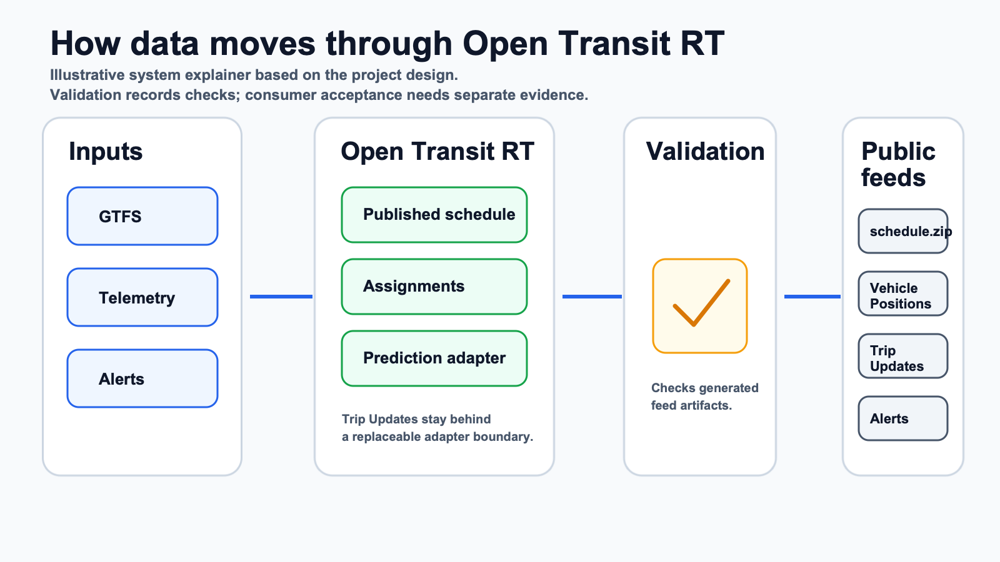

Import or author GTFS
Bring a GTFS ZIP or use GTFS Studio drafts, then activate a published schedule feed version.
Self-hosted GTFS and GTFS Realtime operations
A modular open-source backend for small agencies, civic technologists, and developer integrators evaluating schedule import, telemetry ingest, conservative matching, and public GTFS Realtime feed publication.

Open Transit RT focuses on the backend path from schedule data and vehicle observations to public transit data feeds. It keeps operational controls private and public feed paths stable.
Bring a GTFS ZIP or use GTFS Studio drafts, then activate a published schedule feed version.
Authenticated telemetry feeds conservative matching, with unknown states preferred over false certainty.
Trip Updates run behind a prediction adapter so deterministic and external predictors can be evaluated separately.
Start with the path that matches your role. The deeper repository docs remain the source for commands, contracts, and release-candidate checks.
Use the local evaluator, review the Operations Console, and decide whether a self-hosted path is worth deeper technical help.
Review telemetry, prediction, validator, monitoring, and consumer-discovery connector boundaries before building an adapter.
Use the release-candidate readiness path and local checks before considering a `v0.1.0-rc.1` review.
Help with docs, tests, synthetic fixtures, connector examples, and issue reports that stay inside the product boundary.
This site does not claim CAL-ITP/Caltrans compliance, consumer submission or acceptance, agency adoption or approval, final-root readiness, hosted SaaS, production readiness, vendor compatibility, SLA coverage, or production-grade ETA quality.